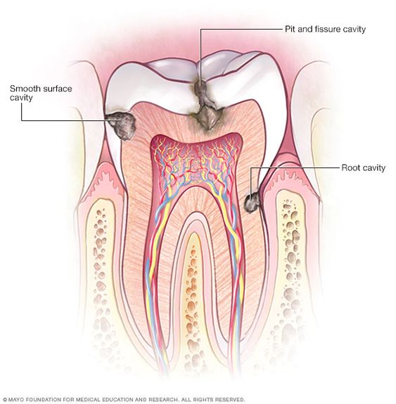
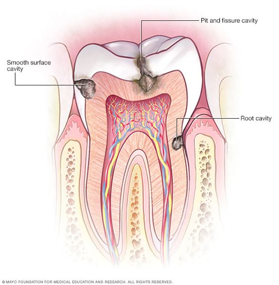

THINK DENTAL
 

TOOTH DECAY
Overview
Tooth decay or more accurately called dental caries is a sugar-dependent infectious disease of the dental hard tissues. Sugar-dependent in that there needs to be a supply of fermentable sugars ib order for this disease to occur. Infectious in that these sugars need to be fermented by microorganisms such as streptococcus mutans and lactobacilli in order for this disease to occur.
The accumulation of acids as a by-product of the metabolism of these sugars (particularly sucrose found in refined sugars) on the surface of your teeth results in the dissolution of the mineral crystals that make up the microscopic structure of your teeth (dental hard tissues). The early process of this disease is largely reversible, however once a cavity or hole forms, it is past the point of no return and if left untreated by a dental professional, it could result in severe complications including DEATH!
Myths and facts
| Myth | Facts |
|---|---|
| No pain, No problem | Even in the absence of pain, tooth destruction still occurs and by the time pain occurs, a complication most likely has begun occuring and the management becomes a little more complicated |
| Tooth decay is a result of divine retribution to disobedient children | Sugars cause tooth decay and naughty and nice children can suffer from the disease. In fact, I'd argue that nice children are more likely to have dental caries because they tend to be rewarded more often with sugary treats than naughty kids. They are also more likely to be allowed to go to bed without brushing as a reward for their good behaviour |
| Sugar-free sodas can't cause tooth decay | This is true to an extent. It's true because these are better than consuming sugary beverages. It is however largely false because these sodas still are very acidic and can still cause or accelerate the dissolution of the minerals that make up your teeth |
Signs and symptoms
These are how you can tell if you have dental caries or one of its complications
- Noticable hole in teeth
- Pain which may occur on its own or may be triggered by hot or cold foods, sour or sweet foods or biting
- Swelling within or around the mouth
- Breaking down of teeth
- Inexplicable tooth discoloration
Prevention
Tooth decay or dental caries is a largely preventable disease and even after the formation of a hole, it can be prevented from getting worse by appropriate management by a dental professional.
- Improved oral hygiene practices which includes brushing at least twice a day
- Reduced intake of refined sugars
- Replacement of sugary beverages with fruit sugars
- Use of fluoridated toothpaste
- Regular dental visits
- Fissure sealing - this is done by the dental professional and involves sealing of the crevices of your back teeth with a flowable material that reduces the accumulation of sugars and reservior of bacteria.
When to see your dentist
EVERY SIX MONTHS!